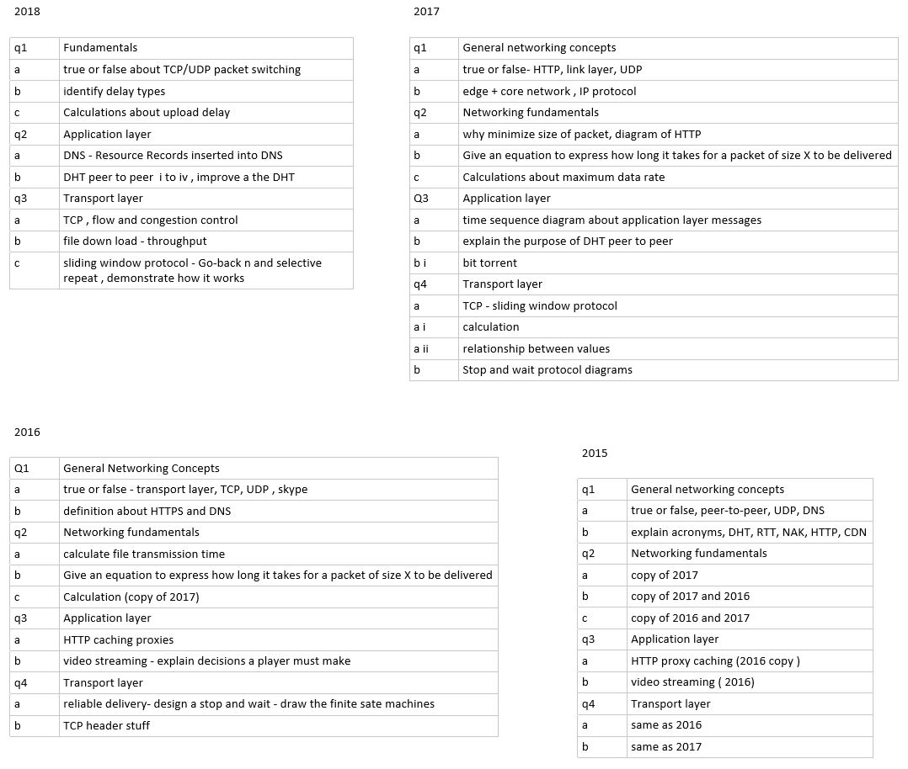

Application layer Notes
Transport Layer Notes
General notes, google drive

General networking Concepts
Calculations | network Performance
Formulas
Circuit switching : how data is transferred though the network
change into same value (bits) , divide file size by link speed, multiply by TDM. add RTT
Transmission delay = L / R where R = link bandwidth b/s, L = packet Length bits
Propagation delay = d/s where d = length of link, s = propagation speed in medium
(2x10^8 for copper)
Transmission time - time it takes ro process at each router
Nodal delay = Dproc + Dqueue + Dtrans + Dprop
where : proc - processing delay, queue - queue delay, trans - Transmission delay (L/R) prop -
propagation delay
Throughput = bits/time unit is the rate at which the bits are transferred between sender/user | theres
always a bottleneck
Rs less than Rc then Rs is average
Rc less than Rs then Rc is average